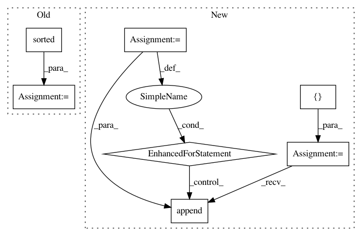

ad5cab5a112c1f0cc25827f902ab26ad2b25f238,bayes_opt/bayesian_optimization.py,BayesianOptimization,initialize,#BayesianOptimization#Any#,149
Before Change
:param points_dict:
for points in zip(*(points_dict[k] for k in sorted(points_dict))):
self.y_init.append(points[0])
self.x_init.append(list(points[1:]))
def initialize_df(self, points_df):
Method to introduce point for which the target function
value is known from pandas dataframe file
After Change
self.y_init.extend(points_dict["target"])
for i in range(len(points_dict["target"])):
all_points = []
for key in self.keys:
all_points.append(points_dict[key][i])
self.x_init.append(all_points)
def initialize_df(self, points_df):
In pattern: SUPERPATTERN
Frequency: 3
Non-data size: 7
Instances
Project Name: fmfn/BayesianOptimization
Commit Name: ad5cab5a112c1f0cc25827f902ab26ad2b25f238
Time: 2017-03-12
Author: aman.bhatia@outlook.com
File Name: bayes_opt/bayesian_optimization.py
Class Name: BayesianOptimization
Method Name: initialize
Project Name: tensorflow/hub
Commit Name: e77ef353f0ec74e4ea819354545848e3cd2ac51d
Time: 2018-08-21
Author: no-reply@google.com
File Name: tensorflow_hub/native_module.py
Class Name:
Method Name: find_signature_inputs_from_multivalued_ops
Project Name: ottogroup/palladium
Commit Name: 68d4117ad88538ba2b21911c5d82e9310416abe7
Time: 2017-03-27
Author: henner.graubitz@ottogroup.com
File Name: palladium/fit.py
Class Name:
Method Name: grid_search